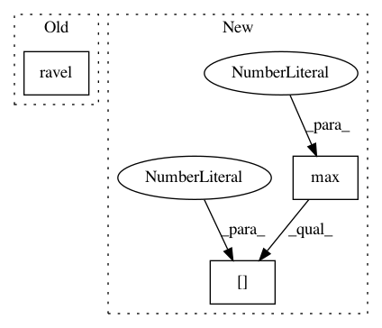

0514d4b6de97d652e6cd99c7b557018890a6ec99,snorkel/learning/disc_learning.py,TFNoiseAwareModel,train,#TFNoiseAwareModel#,111
Before Change
train_idxs = LabelBalancer(Y_train).get_train_idxs(rebalance)
X_train = [X_train[j] for j in train_idxs] if self.representation \
else X_train[train_idxs, :]
Y_train = np.ravel(Y_train)[train_idxs]
// Create new graph, build network, and start session
self._build_new_graph_session(**kwargs)
After Change
train_idxs = LabelBalancer(Y_train).get_train_idxs(rebalance)
else:
// In categorical setting, just remove unlabeled
diffs = Y_train.max(axis=1) - Y_train.min(axis=1)
train_idxs = np.where(diffs > 1e-6)[0]
X_train = [X_train[j] for j in train_idxs] if self.representation \
else X_train[train_idxs, :]
Y_train = Y_train[train_idxs]
In pattern: SUPERPATTERN
Frequency: 3
Non-data size: 3
Instances
Project Name: snorkel-team/snorkel
Commit Name: 0514d4b6de97d652e6cd99c7b557018890a6ec99
Time: 2017-06-26
Author: ajratner@gmail.com
File Name: snorkel/learning/disc_learning.py
Class Name: TFNoiseAwareModel
Method Name: train
Project Name: mapbox/robosat
Commit Name: 9a8d91022cfde0a380d8700be76d6ddbd716a2af
Time: 2018-09-12
Author: o@courtin.co
File Name: robosat/tools/train.py
Class Name:
Method Name: validate
Project Name: mapbox/robosat
Commit Name: 9a8d91022cfde0a380d8700be76d6ddbd716a2af
Time: 2018-09-12
Author: o@courtin.co
File Name: robosat/tools/train.py
Class Name:
Method Name: train